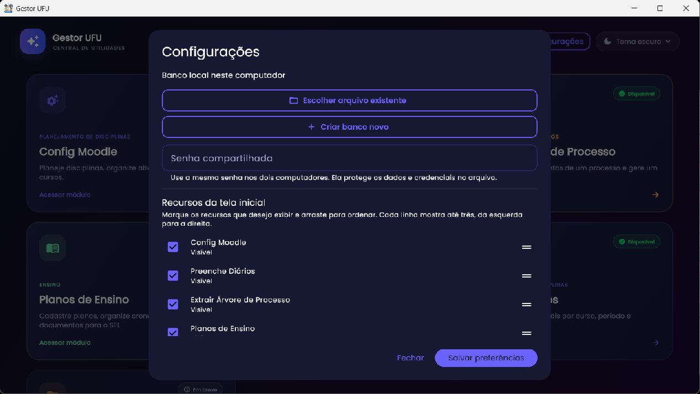

Comece aqui
Primeiros passos e configurações gerais
Conheça a janela principal, ajuste os módulos e escolha onde os dados do Gestor UFU serão guardados antes de cadastrar informações.
Instalar e iniciar
Na versão Windows documentada, a distribuição oficial é disponibilizada como instalador MSI em uma GitHub Release. Baixe o instalador da página oficial do projeto e execute-o. O Windows pode exibir um aviso de reputação porque a versão não está assinada por certificado; confirme a origem do arquivo antes de optar por mantê-lo. Não instale executáveis enviados por terceiros.
- Abra a página Releases do Gestor UFU e confira a versão e as notas.
- Baixe o instalador Windows correspondente à versão. Verifique o nome do arquivo antes de abrir.
- Conclua o assistente e inicie Gestor UFU pelo menu Iniciar/atalho.
- Na primeira execução, confirme o armazenamento e faça uma exportação de backup antes de importar dados antigos.
Não foi possível confirmar, nesta revisão, a disponibilidade de cada ativo de release nem reproduzir uma instalação limpa do MSI; consulte a versão efetivamente publicada antes de seguir o número de versão desta cópia do manual.
Painel e navegação
O painel apresenta cartões de módulos em uma grade responsiva. Selecione Acessar módulo no cartão. A seta no topo das telas retorna ao painel. Cartões desativados mostram “Em breve”. O botão de tema fica no canto superior direito das telas principais.
Os módulos que podem aparecer são: Config Moodle, Preenche Diários, Extrair Árvore de Processo, Planos de Ensino, Planos de Trabalho e Ajusta Horários. Inserir Documentos no SEI é exibido como “Em breve” e não está ligado a uma rota nesta versão.
Configurações da aplicação

Abra Configurações no painel. O diálogo permite selecionar ou criar um arquivo de dados compartilhado, configurar senha quando solicitada, selecionar os módulos visíveis e reorganizar os cartões por arraste. A ordem é lida da esquerda para a direita e de cima para baixo; cabem até três módulos por linha. Confirme em Salvar preferências para aplicar. Módulos ocultos não apagam seus dados: apenas deixam de aparecer no painel.
O armazenamento padrão é local ao usuário do Windows. Um arquivo em OneDrive pode ser selecionado para compartilhar dados, mas dois clientes escrevendo simultaneamente podem disputar alterações/sincronização; feche o aplicativo no outro computador antes de editar o mesmo arquivo e mantenha backups. A aplicação não oferece sincronização transacional em tempo real nem resolução automática de conflitos.
Tema claro e escuro
Use o seletor “Tema escuro/Tema claro” no cabeçalho. A preferência é persistida localmente e reaplicada ao abrir o programa. O tema não altera os dados; apenas a aparência.
Backup e transferência de dados
Os botões do rodapé do painel exportam o backup completo ou importam um arquivo previamente exportado. Importar é operação de alteração: leia a confirmação, confira o arquivo e faça uma cópia atual antes de prosseguir. O backup leva os dados estruturados de módulos que usam o armazenamento do Gestor; ele não inclui sua sessão autenticada do Moodle/Portal/SEI nem senhas que o programa não exporta por segurança.
- Em um computador de origem, escolha Exportar dados e salve o arquivo em uma pasta controlada.
- Transfira o arquivo por canal confiável.
- No destino, exporte também os dados atuais como salvaguarda.
- Selecione Importar backup, escolha o arquivo e confirme a substituição/mesclagem mostrada.
- Abra cada módulo e confira os registros importados.
Atualizações
Ao abrir, a aplicação consulta a versão disponibilizada no repositório. Quando encontra uma versão mais nova, o diálogo permite aceitar ou adiar; se adiar, a mensagem reaparece na próxima abertura. A atualização usa o instalador Windows publicado. Se o download for removido pelo Windows/antivírus, verifique o histórico de proteção e a procedência da Release; baixe manualmente pela página oficial. Não desative a proteção do sistema globalmente.
Perfis e permissões
Não foi identificado um sistema interno de contas, papéis ou permissões do Gestor UFU. Os controles de acesso a curso/processo são os das plataformas institucionais. Quem estiver logado no Edge pode ter permissões diferentes no Moodle, Portal do Docente e SEI; o aplicativo não concede acesso adicional. Mantenha a sessão do Windows protegida, sobretudo quando apontar para arquivo compartilhado.
Atalhos e contextos
Não foi encontrado um mapa global de atalhos de teclado documentado no código consultado. Em Config Moodle e Ajusta Horários existem ações de contexto (por exemplo, menu de opções do cartão, menus de seção e duplo clique em célula/horário) que são descritas nas páginas dos respectivos módulos. O atalho padrão Tab percorre campos e botões; use Enter/Espaço para ativar o controle focado quando o componente permitir.